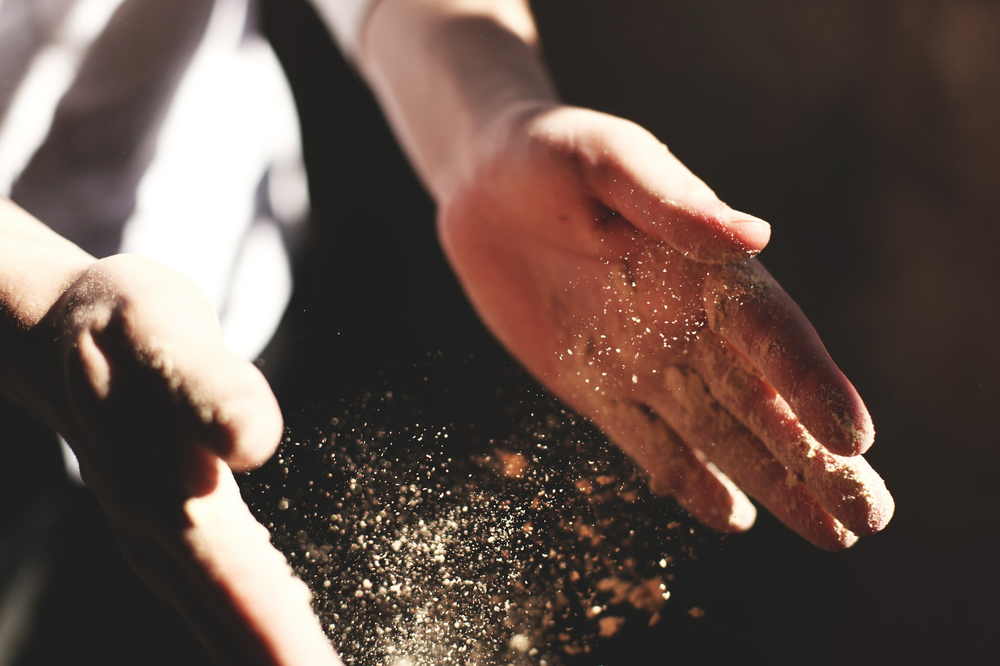
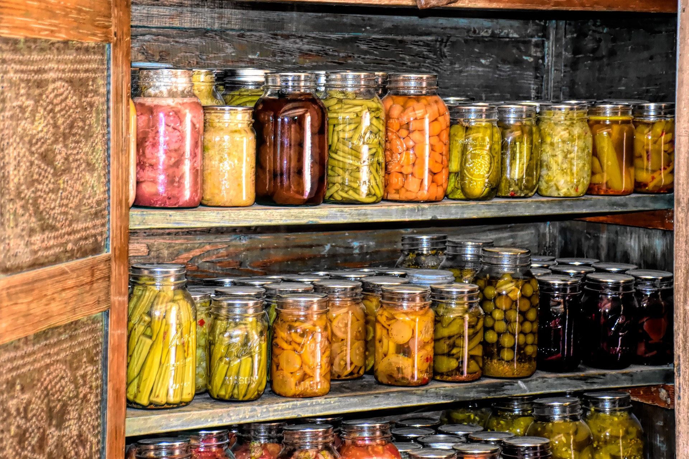
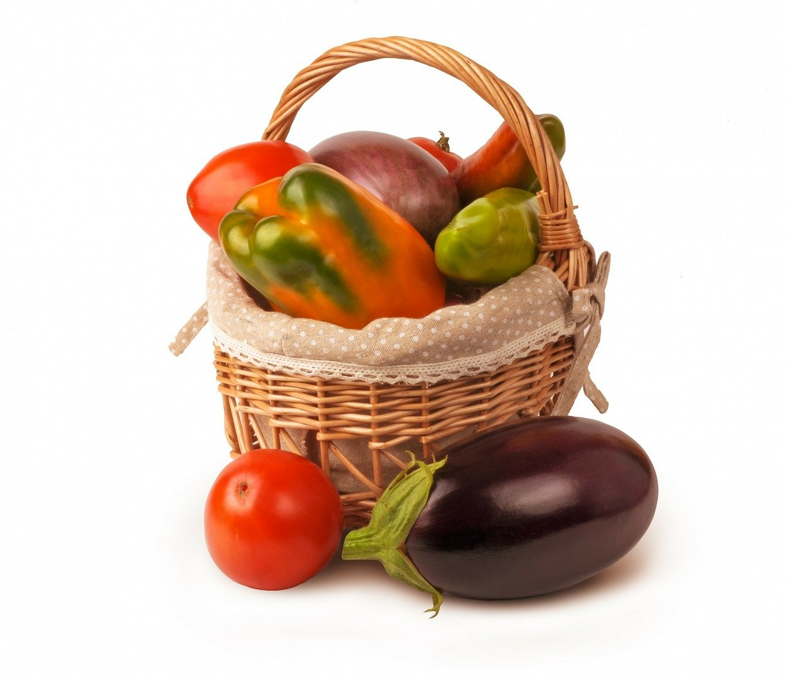
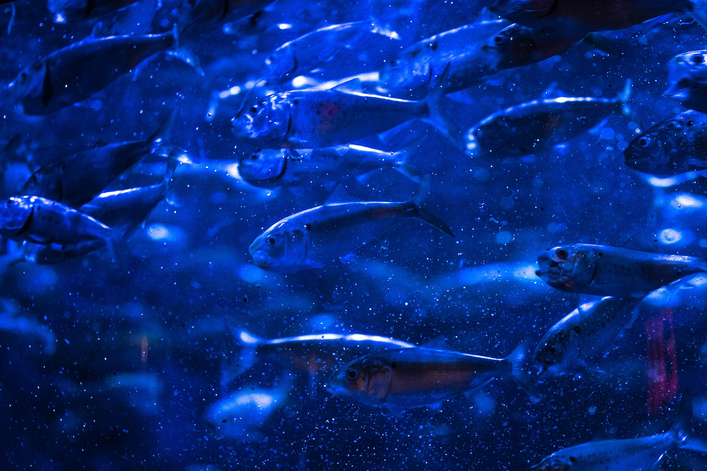
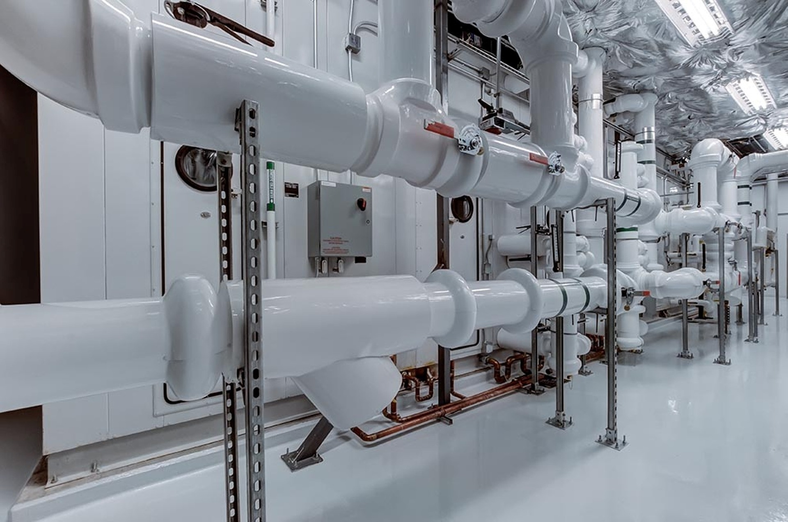
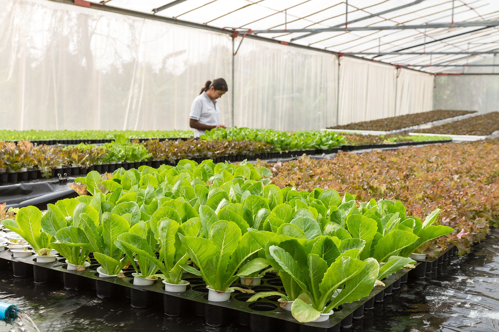
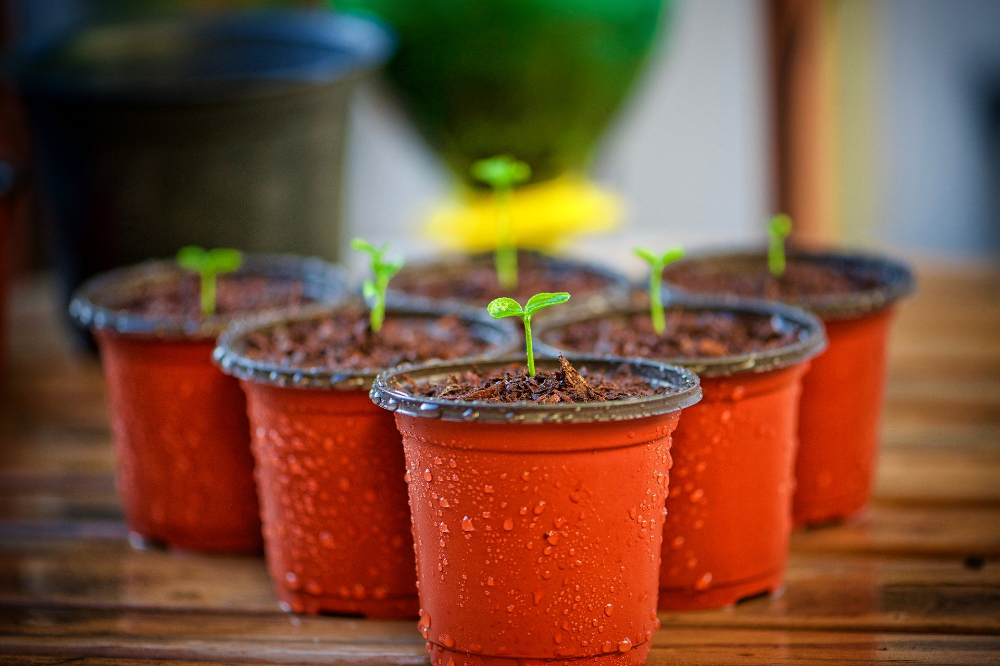
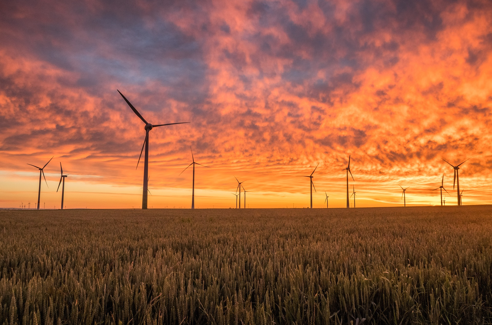

Projects Portfolio
Here is an overview of projects we are planning or conducting. Upon completion of each project, a written report will be
published on our site and a video report will be published on our YouTube channel.
We will also seek to publish reports in relevant professional journals and media channels.

Lean Prepper
In process!
Emergency preparedness is an important part of self-reliance yet too many people don't do it, or don't do it
efficiently. We are currently developing a method of emergency preparedness based upon Lean principles for
business operations. This is designed to help people be prepared for difficult times without being wasteful
in how it's done.
When the project is complete, we will have an app for mobile devices that will provide training in the Lean Prepper
method as well as provide tools to implement it. We will also have training videos posted on our
YouTube channel.

Yard Garden Network
There is a major societal push towards finding "renewable" natural resources. While this is good, it is not
complete. Even if we find renewable resources, if we continue to waste resources the way we are currently
wasting resources, we will soon deplete our new resources before they are able to be renewed. Tackling waste
is something that can happen right now!
One waste that is sitting right under our noses is yards. It is extremely common for people to have yards
but not take care of them. They either don't have time to do it, don't know how to do it, or simply don't want
to do it. How many times have you seen people with fruit treats in their yard that produce fruit that is never
picked or gets infested with worms? There are unused portions of yards all over the place. If we combined these
spaces, we could free up a significant amount of arable land towards food production.
We want to investigate the feasibility of a cooperative community yard gardening network. In this program,
interested participants would let us do the gardening for them on spots of their own yards. Our interns, under
supervision from professional staff, would do the weeding, watering, fertilizing, etc. We can also
provide training for people who are interested in gardening themselves but are unsure how to do it. We perform
our services in exchange for a share of the crops produced in the yard. The crops we receive from the project
will be donated to local food banks so that needy individuals can have nutritious food to eat.
Restaurant Waste Recycling for Vermiculture
We love eating out at restaurants! We also have food safety regulations and social norms that lead to the
creation of a lot of garbage from these facilities. Most garbage from restaurants is organic material such
as food scraps or paper products.
Organic waste is actually quite useful. We want to investigate the feasibility of creating a restaurant waste
recycling program to sort organic waste and utilize it to farm worms. Worms can be used as a food source to
raise other animals like chickens or fish while also producing castings that make valuable fertilizers for
growing fruits and vegetables.

Farming Forage Fish
Fish meal and fish oil use in aquaculture is the big topic. Using fish to grow fish is an
unsustainable practice because it depletes the bottom of the oceanic food chain. As a result, extensive
research is done to find alternative ingredients. Unfortunately, these alternatives are usually from human
food sources (such as soy), can negatively affect the nutritional content of the fish for humans, and can create
culturing problems for the farmers. Therefore, this is not an ideal solution.
Although fish farming takes the heat of this argument, many people don't realize that pet food has the same
issue. Dogs and cats are also depleting the ocean supplies of forage fish species!
We want to ask, "Why not just farm the forage species?" Theoretically, they eat phytoplankton so they won't
deplete ocean resources. They are also highly fecund, adapted to high population densities, and do not need to
be raised to large sizes. We believe it is possible to raise these species of fish in sustainable, efficient
ways so that they can then be used to feed our farmed fish and pets without depleting ocean populations.
This has not been done before so there is much research needed to evaluate the biological and economical
feasibility of such an endeavor.

Evaluating Toxin Leaching -- Aquaculture
Farm-raised aquatic animals tend to be raised in man-made structures. These structures are made of cement,
fiberglass, rubber, glass, or plastics. Unfortunately, there is scientific evidence that these materials
leach dangerous toxins into water that can deposit themselves in animal fats and muscles. Despite this, there
has not been any research investigating the safety of farm-raised animals cultured in such conditions.
Critics of the aquaculture industry sometimes create a fuss about the use of PVC pipe in aquaculture systems.
However, household plumbing also uses PVC pipe. Therefore, understanding the truth behind this issue will
not only improve the aquaculture industry, but may also lead to improvements in basic plumbing systems.
To be clear, we're not trying to take sides for or against aquaculture, PVC pipe, or anything else. We just
want to understand if there's a health issue or not. If there isn't, we can put the argument to rest. If there
is, we will need to find solutions to the problem!

Evaluating Toxin Leaching -- Aquaponics and Hydroponics
Aquaponics and hydroponics are popular practices, especially amongst hobbyists. The concept is noble and
exciting, but there are potentially dangerous risks invovled due to toxin leaching of plastics and other
salvaged materials typically used amongst hobbyists. We want to understand the levels of toxin leaching
in these types of systems and how they affect the food produced from them.

Evaluating Toxin Leaching -- Home Gardening
Scientific evidence exists that shows leaching of toxins into soil from man-made materials such as plastics,
rubbers, and metals. These materials frequently find themselves in household gardens from pots, weed barriers,
decorations, fences, sprinkling systems, and other things. We want to understand if this is creating a health
risk.

Innovation in Integrated Farm/Engergy Operations
World food demand is continually increasing yet the number of farmers throughout the world is decreasing.
Farming is a risky business! We are always looking for innovative ways to improve the livelihood of farmers.
Integrating alternative engergy sources, such as solar or wind power, with farms has the potential to not
just improve world energy production, but also to supplement farmer income to make the profession more attractive
to draw in more young farmers.